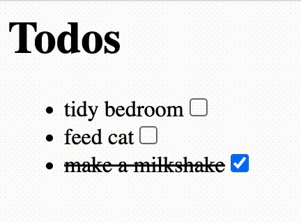

⇦
⇦
2024-05-31

Sometimes your janky ad-hoc JavaScript file reaches a complexity threshold where you wouldn't mind a bit of typing and a taste of some sweet sweet JSX sugar. You consider bringing in npm and friends, then shudder at the thought of the endless upgrade cycles and configuration cruft. Let's get to a halfway house using only the swc binary.
Remember to pick the correct architecture. All releases listed here, for some reason many of the releases don't have a binary file, pick one like this:
curl -L -o ~/bin/swc https://github.com/swc-project/swc/releases/download/v1.5.6/swc-darwin-arm64
chmod +x ~/bin/swc
React is too complicated for our needs right now, let's just blat everything on the page on each render, forget fancy DOM diffing shenanigans.
Remember that:
const foo = <div class="foo">
<b>Hi!</b>
<input oninput={() => console.log("Oi!")}/>
</div>
Just gets compiled to:
const foo = React.createElement("div", {class: "foo"},
React.createElement("b", null, "Hi!"),
React.createElement("input", {oninput: ()=>console.log("Oi!")})
);
We can bring along whatever dumbass React.createElement(...) we want.
Our application consists of two files:
In condesed form, index.tsx just looks like:
import { React } from "./not-react.js"
type Todo = { message: string, done: boolean}
const todos: Todo[] = [...]
const TodoListItem = (todo: Todo) => <li>
{todo.done ? <s>{todo.message}</s> : todo.message}
<input type="checkbox" checked={todo.done} onclick={() => {
todo.done = !todo.done
render()
}}/>
</li>
const App = (todos: Todo[]) => <div>
<h1>Todos</h1>
<ul>{todos.map(TodoListItem)}</ul>
</div>
const appEl = document.getElementById("app")
const render = () => {
while (appEl.firstChild) appEl.removeChild(appEl.firstChild)
appEl.appendChild(App(todos))
}
render()
Simple enough huh?
.tsx filesWe can just compile our files in place with:
~/bin/swc compile --config-file=static/.swcrc --out-dir=. static/**/*.tsx
Run python -m http.server, open localhost:8000/static, easy.